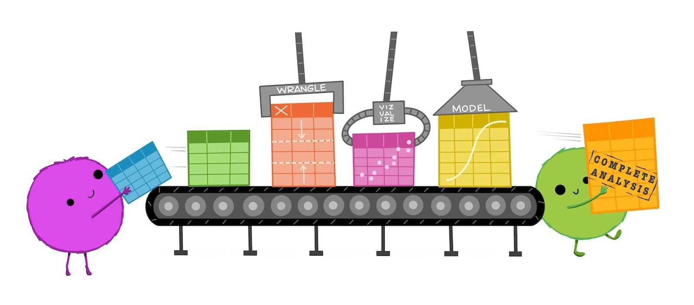
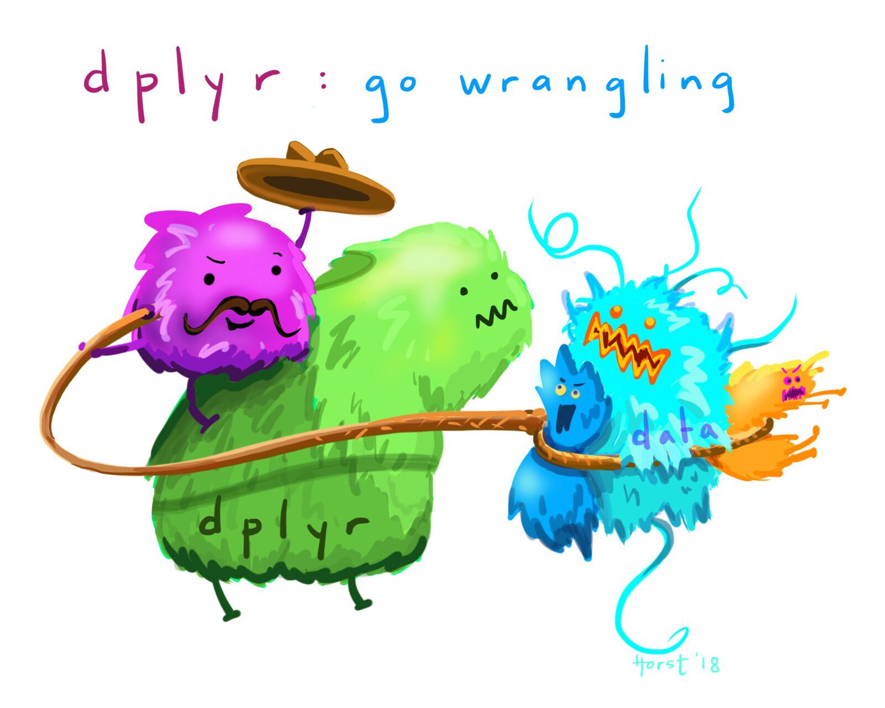
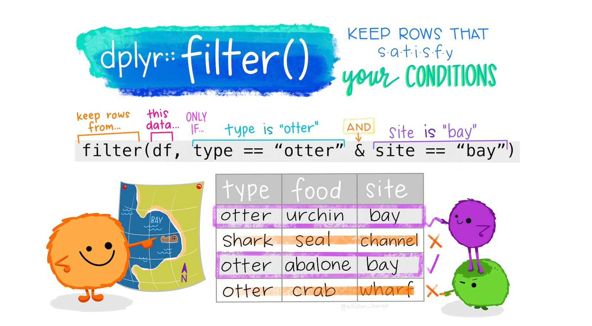
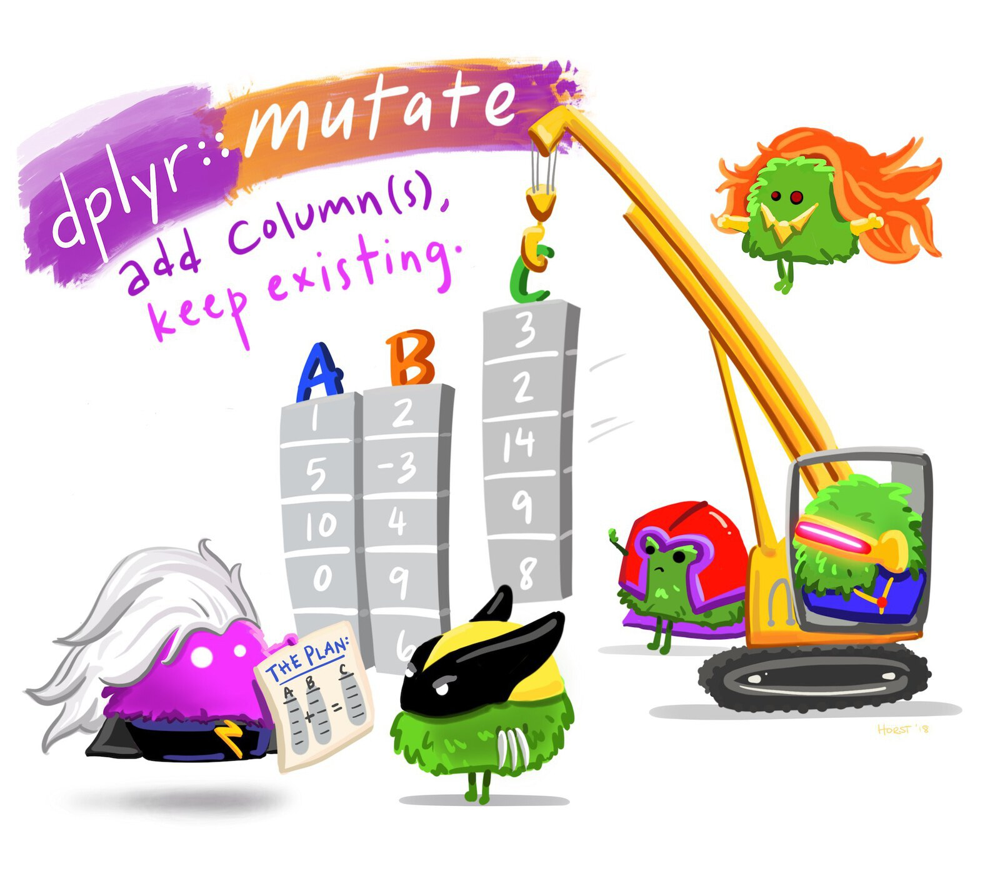

3 Wrangling data
This chapter introduces the essential skills of data wrangling, an important step in preparing data for analysis and presentation. You’ll learn to load, filter, manipulate, and save datasets using R. This chapter guides you through handling tabular and Excel data formats, selecting relevant data, and applying functions from powerful R packages like tidyverse. By the end of this chapter you will be able to confidently transform raw data into a format ready for meaningful insights. Let’s dive in!
3.1 Introduction
A major step in using any data to make decisions or draw conclusions is data wrangling: the process of transforming data from the format in which we originally have it to the format needed to analyse and present it to our audience.

To get started, open RStudio and check that you are working in the Crime Mapping project you created previously. To do this, looking on the top right-hand corner of the RStudio window. If you see the text Crime Mapping, all is well. If you see the text Project: (None), click on the downward triangle next to that text and then select the Crime Mapping project – this will cause RStudio to restart and open your project.
Now create a new R script file by clicking the File menu, then New File and then R Script. A new file will open in the left-hand panel in RStudio. Click File then Save As... to save this file in the project directory you created when you completed the previous chapter. Save the file as chapter_03a.R.
3.1.1 Functions
In this chapter we will learn how to wrangle data in R using functions – specialised pieces of code that do something to the data we give it. The code to use a function (sometimes called calling the function) has two parts: the function name followed by a pair of parentheses, inside which are zero or more arguments separated by commas. Arguments are a way of providing input that a function works on, or to fine-tune the way the function works (we will see many examples of this later). Remember that you can identify a function in R because the name will always have parentheses after it.
One basic R function is sqrt(), which calculates the square root of a number. The sqrt() function has only one argument: the number that we want to find the square root of. If we typed the following code into the R Console, R would show us the square root of 2.
When you run code in R, by default R prints the output of your code – in this case, just the number 1.414214 (for now, you can ignore the number [1] in square brackets).
3.1.2 Packages
R contains thousands of different functions that do different things. A few functions are contained in the default installation of R that you have already installed (this is sometimes referred to as base R). But most functions are contained in packages, which are extensions to base R. Most packages focus on a particular type of data analysis, so that there are packages devoted to time-series analysis, testing whether events are clustered in particular places, network analysis and thousands of other tasks. Packages are often developed by experts in the field, and are typically updated to introduce new features.
To use a package in R, we must do two things:
- install the package, which we have to do just once on each computer we want to use, then
- load the package, which we have to do each time we restart R (which happens when we open RStudio or switch between projects).
The install.packages() function downloads and installs packages from the Comprehensive R Archive Network (universally known as CRAN), which contains about 22,000 different packages. Some packages that are still in the early stages of development are not available on CRAN, but all the packages we will use are there.

So to install (for example) the package called tidyverse, which we will use extensively in this chapter, we would run the R code:
We only have to install a package once for each computer that we will use to run R, although we would have to do it again if we updated to a new version of R.
install.packages() to an R script
You should only ever use the install.packages() function in the R Console, never in an R script. There are two reasons for this:
- When you share your code with other people – which you will do often in this course – they may have their system set up in such a way that running
install.packages()in a script file might cause other code on their computer to stop working. - Since you don’t need to install a package every time you need it (you only need to install it once), your code will run much more slowly if you needlessly install packages every time you run your code.
Once a package is installed on our computer, we have to load it so that we can use it in our code. We load packages using the p_load() function from the pacman package. So to load the tidyverse package, we run the code:
pacman::?
The pacman package is an R package that is used to manage other R packages. The p_load() function from that package is used to load packages. But we learned above that we must load a package before we can use it, which means we cannot use functions from the pacman package until we have loaded the pacman package. To get around that, instead of just using the function name p_load(), we can instead specify which package p_load() is from by prefixing the function name with the relevant package name, separated by ::.
One major advantage of using p_load() to load packages is that before loading any packages, this function will first install them if they have not already been installed on the computer we are using. This means that once we have the pacman package installed we won’t need to worry about whether a package is installed or not – we can just load the package, knowing it will automatically be installed if necessary.
Many packages are focused on specialist tasks and so are only used occasionally, but a few packages are likely to be useful in almost all the code we write. Fortunately, packages can themselves load other packages, and all the main packages we need are loaded by the tidyverse package. That is why you will often see pacman::p_load(tidyverse) at the top of R code in subsequent chapters – that short line of code loads several packages containing hundreds of functions that we can use in data analysis.
What is the purpose of data wrangling?
In general, what is a function in R?
3.2 Loading data
Before we can do anything with any data, we have to load it into R. In this course we will read tabular data in comma-separated values (CSV) and Excel formats, as well as spatial data in different formats (because there are lots of ways to store spatial data). We will learn how to read CSV and Excel data now, but leave loading spatial data until later.
Tabular data (sometimes known as rectangular data) describes data formats with multiple columns where every column has the same number of rows. For example, crime data might have columns for the type of crime, date and address at which the crime occurred.
| type | date | address |
|---|---|---|
| homicide | 14 Feb 2024 | 274 Main St |
| non-residential burglary | 24 Sep 2024 | 541 Station Rd |
| personal robbery | 27 Jan 2025 | 10 North Av |
Almost all the data we will use in this course will be in this rectangular format, and most of the functions we will use expect data to be rectangular.
3.2.1 Loading CSV data

Data stored in CSV format is easy to load with the read_csv() function from the readr package. readr is one of the packages loaded by the tidyverse package, so all we need to do to use this package is include the code pacman::p_load(tidyverse) on the first line of our R script. We will use comments (lines of code beginning with #) to help explain the code as we go.
read_csv() can handle data stored locally on your computer, as well as data stored remotely on an external website. During this course, most of the data we will use will be remote data stored on the crimemappingdata website.
R Console
# We can load data from a file in the same folder as our R script
san_fran_rob <- read_csv("san_francisco_robbery.csv")
# Or another folder on your computer ('../' is short for the parent
# folder of the current folder)
san_fran_rob <- read_csv("../san_francisco_robbery.csv")
# Or directly from a file online
san_fran_rob <- read_csv("http://example.com/san_francisco_robbery.csv")In each of these examples, the code stores the result of the read_csv() function in an object named san_fran_rob. Objects are places where we can store data. To create an object and store our data in it, we use the assignment operator <- (a less-than sign followed by a dash). Continually typing <- can be tedious, so in RStudio we can use the keyboard short cut Option+- (on Mac) or Alt+- (on Windows or Linux) to insert the complete operator.
When choosing object names, it is important to remember that if you assign a value (such as the number 1 or the result of the function read_csv()) to an object name, R will overwrite any existing value of that object name. We can see this in a simple example:
If we were to run this code, the object one_to_ten would not actually hold the numbers from one to ten, but instead the value 1.414214 (the square root of two). There is no way to undo assignment of a value to an object, so once you have run the code one_to_ten <- sqrt(2) it is not possible to recover any previous value that was assigned to the object one_to_ten.
Objects come in several different types, with tabular data typically being stored as a data frame. The read_csv() function actually produces a modern variation on the data frame called (slightly strangely) a tibble, which makes use of some advances in how R handles data since the data-frame format was set 20 years ago. Tibbles behave just like data frames almost all of the time (so much so that people working with tibbles often call them data frames) except for a few occasions where they behave in a more-convenient way. We will always use tibbles instead of data frames in this course.
We can use read_csv() to load data from https://mpjashby.github.io/crimemappingdata/san_francisco_robbery.csv and store it in an object called san_fran_rob. Add this code to the script file chapter_03a.R and then run that code as you learned about in Section 2.3.1.
chapter_03a.R
Rows: 951 Columns: 5
── Column specification ────────────────────────────────────────────────────────
Delimiter: ","
chr (1): offense_type
dbl (3): uid, longitude, latitude
dttm (1): date_time
ℹ Use `spec()` to retrieve the full column specification for this data.
ℹ Specify the column types or set `show_col_types = FALSE` to quiet this message.If the data are loaded successfully, R will list the columns in the data and the type of variable (numeric, date etc.) stored in each column. The format of this is somewhat esoteric, but if you are interested they are explained in the ‘Extra detail’ box below.
read_csv() mean?
By default, the read_csv() function prints a message when it loads data to summarise the format of each data column. In the case of the san_fran_rob dataset, read_csv() tells us that:
- there is one column called
offense_typethat contains character (chr) values, - there are three columns called
uid,longitudeandlatitudecontaining numeric (dbl) values, and - there is one column called
date_timethat contains values stored as dates and times (dttm).
There are some other possible types of data, but we will learn about these later on. The numeric values are referred to as dbl values because they are stored in a format that can handle numbers that are not whole numbers (e.g. 123.456). This format for storing numbers is called the double-precision floating-point format, which is often known as the double format for short. Most numbers in R are stored in double format, so you can think of the format code dbl as meaning ‘numeric’.
To see the first few rows of data currently stored in an object, we can use the head() function.
# A tibble: 6 × 5
uid offense_type date_time longitude latitude
<dbl> <chr> <dttm> <dbl> <dbl>
1 24103841 personal robbery 2019-01-01 19:50:00 -122. 37.8
2 24103948 personal robbery 2019-01-02 08:00:00 -122. 37.8
3 24104162 personal robbery 2019-01-03 00:30:00 -122. 37.8
4 24104203 personal robbery 2019-01-03 03:13:00 -122. 37.8
5 24104237 personal robbery 2019-01-03 09:30:00 -122. 37.7
6 24104238 personal robbery 2019-01-03 09:30:00 -122. 37.73.2.2 Loading Excel data
Loading data from Microsoft Excel files is very similar to loading CSV data, with a few important differences. Functions to load Excel data are contained in the readxl package.
There are two main things we must do to import Excel data that are not required for importing CSV data. The first is that the readxl package cannot directly load files from a URL, instead only loading files that are present on your computer. To get round this, we will first download an Excel file and store it in a temporary directory (to avoid cluttering up our computers).
To practice loading data from an Excel file, create a new R script file called chapter_03b.R and paste the following code into it, then run the code.
chapter_03b.R
# Load packages
pacman::p_load(readxl, tidyverse)
# Specify the name of and location of our temporary file: it does not matter
# what this file is called or where it is stored, so we use the tempfile()
# function to create a file in the correct location automatically
temp_file <- tempfile(fileext = ".xlsx")
# Download the Excel file and store it in the temporary location
download.file(
url = "https://mpjashby.github.io/crimemappingdata/aggravated_assaults.xlsx",
destfile = temp_file,
mode = "wb"
)The download.file() function does not produce any output if the file has been successfully downloaded, so you will not see any output when you run this code.
Using download.file() on Windows
If you are using a Windows computer, you may find that the download.file() function in the code below does not work as expected. This is because Windows handles files in a way that distinguishes between plain-text files such as .txt and .csv files and binary files, which includes most other file types (including compressed files). Since Excel files are not plain-text files, on Windows you need to specify that you want them to be downloaded as a binary file. To do this, add the argument mode = "wb" to the download.file() function so that it reads:
download.file(
url = "https://mpjashby.github.io/crimemappingdata/aggravated_assaults.xlsx",
destfile = temp_file,
mode = "wb"
)If you are using a Mac or a Linux computer then you do not need to worry about this.
Now we have downloaded our data, we can load it into R. Since Excel files can contain multiple sheets, we need to specify which sheet we would like to load into a tibble. We can use the excel_sheets() function to get a list of sheets in an Excel file:
[1] "Austin" "Fort Worth" "Seattle" We can now load the sheet containing data for Austin and view the first few rows of the resulting object:
and, as usual, we can use the head() function to look at the data:
# A tibble: 6 × 5
date longitude latitude location_type location_category
<dttm> <dbl> <dbl> <chr> <chr>
1 2019-01-01 00:00:00 -97.7 30.3 residence residence
2 2019-01-01 00:00:00 -97.8 30.2 residence residence
3 2019-01-01 00:01:00 -97.7 30.3 <NA> <NA>
4 2019-01-01 00:15:00 -97.7 30.3 <NA> <NA>
5 2019-01-01 00:27:00 -97.8 30.2 residence residence
6 2019-01-01 00:30:00 -97.7 30.3 <NA> <NA> Now we have learned how to load our data into an object, we can use other R functions to work with that data in many different ways.
Different types of data are loaded into R with different functions, e.g. CSV files are loaded with the read_csv() function from the readr package and Microsoft Excel files are loaded with the read_excel() function from the readxl package. Appendix A has a list of which function to use to load each type of file.
Learn more about how to read data into R by reading this chapter of the free online book R for Data Science.
Excel data can often be messy and the readxl package contains various other functions that can be used to deal with this. You can learn more about how to handle messy Excel data in this online tutorial.
Answer the following questions to check your understanding of what we’ve learned so far in this chapter. If you get a question wrong, you can keep trying until you get the right answer.
What R package contains the function read_csv() to read CSV data?
What R code prints the first few rows of the tibble called san_fran_rob?
If we create an object using the code number_ten <- 10 and then run the code number_ten <- sqrt(2), what value will the object number_ten now have?
3.3 Selecting columns
In this section we will learn how to reduce the size of our data by selecting only the columns we need and discarding the rest. This can be particularly useful if we are working with a very-large dataset, or if we want to produce a table containing only some columns.

We can use the select() function from the dplyr package (one of the packages that is loaded automatically when we call the pacman::p_load(tidyverse) function) to select columns.
If we wanted to select just the date and location_type columns from the agg_assault_data we loaded in the previous section, we can use this code:
# A tibble: 8,696 × 2
date location_type
<dttm> <chr>
1 2019-01-01 00:00:00 residence
2 2019-01-01 00:00:00 residence
3 2019-01-01 00:01:00 <NA>
4 2019-01-01 00:15:00 <NA>
5 2019-01-01 00:27:00 residence
6 2019-01-01 00:30:00 <NA>
7 2019-01-01 00:51:00 <NA>
8 2019-01-01 01:00:00 residence
9 2019-01-01 01:00:00 <NA>
10 2019-01-01 01:12:00 residence
# ℹ 8,686 more rows
In a previous section, we mentioned that the code needed to run (or call) a function in R has two parts: the function name followed by a pair of parentheses, inside which are zero or more arguments separated by commas. The arguments in the select() function (and many other functions in the dplyr package) work in a slightly different way to many other functions. Here, the first argument is the name of the data object that we want to select from. All the remaining arguments (here, date and location_type) are the names of the columns we want to select from the data.
We can select as many columns as we want, by just adding the names of the columns separated by commas. The columns in our new dataset will appear in the order in which we specify them in the select() function.
We can also use select() to rename columns at the same time as selecting them. For example, to select the columns date and location_type while also renaming location_type to be called type, can use:
# A tibble: 8,696 × 2
date type
<dttm> <chr>
1 2019-01-01 00:00:00 residence
2 2019-01-01 00:00:00 residence
3 2019-01-01 00:01:00 <NA>
4 2019-01-01 00:15:00 <NA>
5 2019-01-01 00:27:00 residence
6 2019-01-01 00:30:00 <NA>
7 2019-01-01 00:51:00 <NA>
8 2019-01-01 01:00:00 residence
9 2019-01-01 01:00:00 <NA>
10 2019-01-01 01:12:00 residence
# ℹ 8,686 more rowsselect() removes any columns that we don’t explicitly choose to keep. If we want to rename a column while keeping all the existing columns in the data, we can instead use the rename() function (also from the dplyr package):
# A tibble: 8,696 × 5
date longitude latitude type location_category
<dttm> <dbl> <dbl> <chr> <chr>
1 2019-01-01 00:00:00 -97.7 30.3 residence residence
2 2019-01-01 00:00:00 -97.8 30.2 residence residence
3 2019-01-01 00:01:00 -97.7 30.3 <NA> <NA>
4 2019-01-01 00:15:00 -97.7 30.3 <NA> <NA>
5 2019-01-01 00:27:00 -97.8 30.2 residence residence
6 2019-01-01 00:30:00 -97.7 30.3 <NA> <NA>
7 2019-01-01 00:51:00 -97.7 30.3 <NA> <NA>
8 2019-01-01 01:00:00 -97.7 30.4 residence residence
9 2019-01-01 01:00:00 -97.7 30.3 <NA> <NA>
10 2019-01-01 01:12:00 -97.7 30.3 residence residence
# ℹ 8,686 more rowsRemember that functions in R generally do not change existing objects, but instead produce (or return) new ones. This means if we want to store the result of this function so we can use it later, we have to assign the value returned by the function to a new object (or overwrite the existing object):
R Console
# A tibble: 6 × 2
lon lat
<dbl> <dbl>
1 -97.7 30.3
2 -97.8 30.2
3 -97.7 30.3
4 -97.7 30.3
5 -97.8 30.2
6 -97.7 30.3You can learn more about selecting, filtering and arranging data using the functions in the dplyr package by reading this Introduction to dplyr tutorial.
select() and rename()
Which dplyr function allows you to change the name of columns while keeping all the columns in the original data
Which dplyr function allows you to choose only some columns in the original data?
3.4 Filtering rows
Often in crime mapping we will only be interested in part of a particular dataset. In the same way that we can select particular columns in our data, we can filter particular rows using the filter() function from the dplyr package.

If we were only interested in offences in the agg_assault_data dataset that occurred in residences, we could use filter():
# A tibble: 4,385 × 5
date longitude latitude location_type location_category
<dttm> <dbl> <dbl> <chr> <chr>
1 2019-01-01 00:00:00 -97.7 30.3 residence residence
2 2019-01-01 00:00:00 -97.8 30.2 residence residence
3 2019-01-01 00:27:00 -97.8 30.2 residence residence
4 2019-01-01 01:00:00 -97.7 30.4 residence residence
5 2019-01-01 01:12:00 -97.7 30.3 residence residence
6 2019-01-01 01:20:00 -97.7 30.4 residence residence
7 2019-01-01 01:50:00 -97.7 30.3 residence residence
8 2019-01-01 02:21:00 -97.8 30.2 residence residence
9 2019-01-01 02:26:00 -97.8 30.2 residence residence
10 2019-01-01 02:35:00 -97.7 30.4 residence residence
# ℹ 4,375 more rowsNote that:
- the column name
location_typeis not surrounded by quotes (because it represents a column in the data) but the column value"residence"is (because it represents the literal character value “residence”), and - the
==(equal to) operator is used, since a single equals sign=has another meaning in R.
We can filter using the values of more than one column simultaneously. To filter offences in which the location_category is ‘retail’ and the location_type is ‘convenience store’:
R Console
# A tibble: 90 × 5
date longitude latitude location_type location_category
<dttm> <dbl> <dbl> <chr> <chr>
1 2019-01-06 16:58:00 -97.8 30.5 convenience store retail
2 2019-01-08 17:56:00 -97.7 30.3 convenience store retail
3 2019-01-10 01:25:00 -97.7 30.4 convenience store retail
4 2019-01-12 00:49:00 -97.6 30.4 convenience store retail
5 2019-01-12 05:53:00 -97.7 30.4 convenience store retail
6 2019-01-12 17:01:00 -97.7 30.4 convenience store retail
7 2019-01-12 19:12:00 -97.8 30.3 convenience store retail
8 2019-01-12 19:14:00 -97.7 30.4 convenience store retail
9 2019-01-13 04:10:00 -97.8 30.2 convenience store retail
10 2019-01-22 22:01:00 -97.7 30.3 convenience store retail
# ℹ 80 more rowsfilter() returns rows that meet all the criteria you specify
When you run the code above, the result will contain only those rows in the original data for which the location_category column has the value ‘retail’ and the location_type column has the value ‘convenience store’.
As well as filtering using the == (equals) operator, we can filter using the greater-than (>), less-than (<), greater-than-or-equal-to (>=) and less-than-or-equal-to (<=) operators. For example, we can choose offences that occurred in residences on or after 1 July 2019:
# A tibble: 2,286 × 5
date longitude latitude location_type location_category
<dttm> <dbl> <dbl> <chr> <chr>
1 2019-07-01 02:40:00 -97.8 30.4 residence residence
2 2019-07-01 07:26:00 -97.7 30.3 residence residence
3 2019-07-01 08:25:00 -97.8 30.2 residence residence
4 2019-07-01 09:39:00 -97.7 30.3 residence residence
5 2019-07-01 09:40:00 -97.7 30.4 residence residence
6 2019-07-01 16:24:00 -97.8 30.1 residence residence
7 2019-07-01 17:30:00 -97.8 30.2 residence residence
8 2019-07-01 17:41:00 -97.8 30.2 residence residence
9 2019-07-01 18:03:00 -97.8 30.2 residence residence
10 2019-07-01 18:16:00 -97.8 30.1 residence residence
# ℹ 2,276 more rowsymd() function do?
The ymd() function from the lubridate package (which we will find out more about below) converts a date stored as a text value to a value that R understands represents a calendar date. The function is called ymd() because it processes dates that are stored in year-month-date format. We will learn more about working with dates in Chapter 16.
Sometimes we will want to filter rows that are one thing or another. We can do this with the | (or) operator. For example, we can filter offences that occurred either in leisure facilities or shopping malls on or after 1 July 2019:
R Console
# A tibble: 10 × 5
date longitude latitude location_type location_category
<dttm> <dbl> <dbl> <chr> <chr>
1 2019-07-01 09:00:00 -97.7 30.3 entertainment leisure
2 2019-07-15 14:06:00 -97.8 30.3 mall retail
3 2019-08-06 23:20:00 -97.7 30.4 mall retail
4 2019-08-18 13:31:00 -97.7 30.3 mall retail
5 2019-08-25 15:35:00 -97.8 30.3 mall retail
6 2019-09-06 15:58:00 -97.7 30.4 mall retail
7 2019-10-05 16:47:00 -97.7 30.2 mall retail
8 2019-11-01 22:23:00 -97.7 30.3 entertainment leisure
9 2019-11-18 16:29:00 -97.7 30.4 mall retail
10 2019-11-27 14:14:00 -97.8 30.3 mall retail If we want to filter offences that have any one of several different values of the same column, we can use the %in% (in) operator. To filter offences that occurred in either streets or publicly accessible open spaces:
# A tibble: 165 × 5
date longitude latitude location_type location_category
<dttm> <dbl> <dbl> <chr> <chr>
1 2019-01-07 21:37:00 -97.8 30.5 green space open space
2 2019-01-08 14:02:00 -97.7 30.3 green space open space
3 2019-01-10 01:59:00 -97.6 30.3 green space open space
4 2019-01-11 17:00:00 -97.7 30.3 green space open space
5 2019-01-12 15:50:00 -97.8 30.2 green space open space
6 2019-01-12 16:00:00 -97.8 30.4 green space open space
7 2019-01-15 07:20:00 -97.7 30.2 green space open space
8 2019-01-17 00:00:00 -97.7 30.4 green space open space
9 2019-01-22 22:00:00 -97.7 30.2 green space open space
10 2019-01-29 01:40:00 -97.7 30.2 green space open space
# ℹ 155 more rowsThe code c("open space", "street") produces what is referred to in R as a vector (sometimes referred to as an atomic vector, especially in error messages). A vector is a one-dimensional sequence of values of the same type (i.e. all numbers, all character strings etc.). For example, a vector might hold several strings of text (as in the vector c("open space", "street")) or a series of numbers such as c(1, 2, 3). There is lots we could learn about vectors, but for now it’s only necessary to know that we can create vectors with the c() or combine function.
If we wanted to re-use a vector of values several times in our code, it might make sense to store the vector as an object. For example:
R Console
# A tibble: 165 × 5
date longitude latitude location_type location_category
<dttm> <dbl> <dbl> <chr> <chr>
1 2019-01-07 21:37:00 -97.8 30.5 green space open space
2 2019-01-08 14:02:00 -97.7 30.3 green space open space
3 2019-01-10 01:59:00 -97.6 30.3 green space open space
4 2019-01-11 17:00:00 -97.7 30.3 green space open space
5 2019-01-12 15:50:00 -97.8 30.2 green space open space
6 2019-01-12 16:00:00 -97.8 30.4 green space open space
7 2019-01-15 07:20:00 -97.7 30.2 green space open space
8 2019-01-17 00:00:00 -97.7 30.4 green space open space
9 2019-01-22 22:00:00 -97.7 30.2 green space open space
10 2019-01-29 01:40:00 -97.7 30.2 green space open space
# ℹ 155 more rowsFinally, you can filter based on the output of any R function that returns TRUE or FALSE. For example, missing values are represented in R as NA. We can test whether a value is missing using the is.na() function. If we wanted to remove rows from our data that had missing location types, we would filter for those rows that are not NA. We can do this by combining the is.na() function with the ! (not) operator:
# A tibble: 5,344 × 5
date longitude latitude location_type location_category
<dttm> <dbl> <dbl> <chr> <chr>
1 2019-01-01 00:00:00 -97.7 30.3 residence residence
2 2019-01-01 00:00:00 -97.8 30.2 residence residence
3 2019-01-01 00:27:00 -97.8 30.2 residence residence
4 2019-01-01 01:00:00 -97.7 30.4 residence residence
5 2019-01-01 01:12:00 -97.7 30.3 residence residence
6 2019-01-01 01:20:00 -97.7 30.4 residence residence
7 2019-01-01 01:35:00 -97.7 30.3 hotel hotel
8 2019-01-01 01:50:00 -97.7 30.3 residence residence
9 2019-01-01 02:21:00 -97.8 30.2 residence residence
10 2019-01-01 02:26:00 -97.8 30.2 residence residence
# ℹ 5,334 more rowsWe will see lots more examples of how to use filter() in future chapters.
filter()
What is a vector (sometimes known as an atomic vector) in R?
Which offences (rows) will be returned by the code filter(agg_assault_data, location_type %in% c("restaurant", "mall"))?
What does the <= operator mean?
3.5 Transforming values
It is often useful to create new columns in our data, or change the values of existing columns. The mutate() function in the dplyr package gives us a way to transform existing columns in our dataset using almost any R function.

For example, say we wanted to create a new column in our aggravated-assault dataset specifying the day of the week on which each crime occurred. We can do this using the wday() function from the lubridate package (using the label = TRUE argument to produce weekday names, rather than numbers):
# A tibble: 8,696 × 6
date longitude latitude location_type location_category
<dttm> <dbl> <dbl> <chr> <chr>
1 2019-01-01 00:00:00 -97.7 30.3 residence residence
2 2019-01-01 00:00:00 -97.8 30.2 residence residence
3 2019-01-01 00:01:00 -97.7 30.3 <NA> <NA>
4 2019-01-01 00:15:00 -97.7 30.3 <NA> <NA>
5 2019-01-01 00:27:00 -97.8 30.2 residence residence
6 2019-01-01 00:30:00 -97.7 30.3 <NA> <NA>
7 2019-01-01 00:51:00 -97.7 30.3 <NA> <NA>
8 2019-01-01 01:00:00 -97.7 30.4 residence residence
9 2019-01-01 01:00:00 -97.7 30.3 <NA> <NA>
10 2019-01-01 01:12:00 -97.7 30.3 residence residence
# ℹ 8,686 more rows
# ℹ 1 more variable: weekday <ord>We can also change existing columns. However (as with objects) there is no way to undo this, so you should only replace columns if you are sure you will not need them. For example, if we wanted to remove the time portion of the date variable (which may sometimes be useful, as shown in the next section) using the as_date() function (also from the lubridate package) and at the same time create the weekday variable:
# A tibble: 8,696 × 6
date longitude latitude location_type location_category weekday
<date> <dbl> <dbl> <chr> <chr> <ord>
1 2019-01-01 -97.7 30.3 residence residence Tue
2 2019-01-01 -97.8 30.2 residence residence Tue
3 2019-01-01 -97.7 30.3 <NA> <NA> Tue
4 2019-01-01 -97.7 30.3 <NA> <NA> Tue
5 2019-01-01 -97.8 30.2 residence residence Tue
6 2019-01-01 -97.7 30.3 <NA> <NA> Tue
7 2019-01-01 -97.7 30.3 <NA> <NA> Tue
8 2019-01-01 -97.7 30.4 residence residence Tue
9 2019-01-01 -97.7 30.3 <NA> <NA> Tue
10 2019-01-01 -97.7 30.3 residence residence Tue
# ℹ 8,686 more rowsYou may sometimes want to change only some values in a column. With a categorical variable, we can change one value to another using the case_match() function from the dplyr package. Look at this code and use the comments (lines starting with #) to understand how it works.
R Console
mutate(
agg_assault_data,
location_category = case_match(
location_category,
# We specify which existing values we want to convert into which new values
# by providing the existing value on the left-hand side and the new value
# on the right hand side, separated by a tilde (~) character
"open space" ~ "public open space",
"street" ~ "street or road",
# If we want to keep the existing values for any values we have not
# specified, we can do that using the .default argument
.default = location_category
)
)# A tibble: 8,696 × 5
date longitude latitude location_type location_category
<dttm> <dbl> <dbl> <chr> <chr>
1 2019-01-01 00:00:00 -97.7 30.3 residence residence
2 2019-01-01 00:00:00 -97.8 30.2 residence residence
3 2019-01-01 00:01:00 -97.7 30.3 <NA> <NA>
4 2019-01-01 00:15:00 -97.7 30.3 <NA> <NA>
5 2019-01-01 00:27:00 -97.8 30.2 residence residence
6 2019-01-01 00:30:00 -97.7 30.3 <NA> <NA>
7 2019-01-01 00:51:00 -97.7 30.3 <NA> <NA>
8 2019-01-01 01:00:00 -97.7 30.4 residence residence
9 2019-01-01 01:00:00 -97.7 30.3 <NA> <NA>
10 2019-01-01 01:12:00 -97.7 30.3 residence residence
# ℹ 8,686 more rowsWe could also make changes based on more-complicated sets of criteria using the case_when() function, but we will return to that in a future chapter.
The R functions that you use inside mutate() must return the same number of values as there are rows in the dataset. This is true for most R functions (which are referred to as vectorised functions), but there are some – such as mean() and max() – that return a single value. These summarising functions cannot be used inside mutate() (you will see an error message if you try) but are instead used with the next data-wrangling function we will learn about: summarise().
3.6 Summarising rows
Summarising data is often useful in crime analysis. We can use the summarise() function from the dplyr package to produce summaries of different columns in our data. There is an identical function called summarize() so that you do not have to remember whether to use the US or British spelling.
By default, summarise() collapses data into a single row, with each column summarised using a function that you specify. For example, suppose you want to find out which police station a specialist squad should be based at to most easily respond to reports of serious assaults. You might do this by working out the weighted centre of all the offence locations, i.e. the means of the longitudes and latitudes for all the crimes. You could then base the squad at the police station that was closest to the weighted centre.
R Console
# A tibble: 1 × 2
mean_lng mean_lat
<dbl> <dbl>
1 -97.7 30.3na.rm = TRUE do?
Lots of functions in R have an argument called na.rm that can be set to either TRUE or FALSE. Setting na.rm = TRUE in this case specifies that the mean() function should remove (rm) any missing (NA) values before calculating the mean.
If we do not specify this and our data contain any missing values, the mean() function will return NA. Functions in R do this because it is not possible to completely answer the question ‘what is the mean of these values?’ if some of the values are missing.
This logic applies in lots of cases. For example, if you create an R object called value with the code value <- 2 and then run the R code value > 1, you will get the answer TRUE. But if you set the object value to be NA using the code value <- NA, when you run the R code value > 1 you will get the answer NA. This is because there is no way to know if the missing value represented by NA is greater than 1 or not. This is why it is often useful to calculate statistics such as a mean value after removing any missing values using the na.rm = TRUE argument.
summarise() becomes more useful if we first divide our data into groups, since we then get a summary for each group separately. We can use the .by argument of the summarise() function to specify that we want separate summaries for each unique value of one or more columns in the data. For example, to produce a separate summary for each unique value of location_category, we can use this code:
R Console
# A tibble: 12 × 3
location_category mean_lng mean_lat
<chr> <dbl> <dbl>
1 residence -97.7 30.3
2 <NA> -97.7 30.3
3 hotel -97.7 30.3
4 other -97.7 30.3
5 retail -97.7 30.3
6 healthcare -97.7 30.3
7 open space -97.7 30.3
8 commercial -97.7 30.3
9 education -97.7 30.3
10 government -97.7 30.3
11 leisure -97.7 30.4
12 transportation -97.7 30.2You can add multiple grouping variables using the c() (combine) function if you want to generate summary values for groups within groups:
R Console
# A tibble: 24 × 4
location_category location_type mean_lng mean_lat
<chr> <chr> <dbl> <dbl>
1 residence residence -97.7 30.3
2 <NA> <NA> -97.7 30.3
3 hotel hotel -97.7 30.3
4 other other -97.7 30.3
5 retail other retail -97.7 30.3
6 healthcare healthcare -97.7 30.3
7 retail mall -97.8 30.3
8 retail convenience store -97.7 30.3
9 open space green space -97.7 30.3
10 commercial office -97.7 30.3
# ℹ 14 more rows3.6.1 Counting rows
One very common way of summarising data is to count the number of rows in a dataset that have each unique value of one or more columns. For example, if we have a dataset of crimes in which each row represents a single crime, we might want to count how many crimes happened on each day of the week, or how many crimes of each type are in the dataset. We can use summarise() to do that, together with the n() function (from the same dplyr package as summarise()). For example, if we wanted to count how many rows in the agg_assault_data dataset had each unique combination of location_category and location_type:
# A tibble: 24 × 3
location_category location_type n
<chr> <chr> <int>
1 residence residence 4385
2 <NA> <NA> 3352
3 hotel hotel 248
4 other other 205
5 retail other retail 30
6 healthcare healthcare 36
7 retail mall 11
8 retail convenience store 90
9 open space green space 165
10 commercial office 28
# ℹ 14 more rowsIn this code, the n() function simply returns the number of rows of data in each group, i.e. the number of rows with each unique combination of values of location_category and location_type.
Since counting the number of rows in each group a dataset is a very common task, dplyr includes another function called count() that allows you to do the same thing as in the code above, but with slightly less typing:
So if you wanted to know how many aggravated assaults had occurred in each location category and type, you could this code instead of using summarise():
# A tibble: 24 × 3
location_category location_type n
<chr> <chr> <int>
1 commercial construction 11
2 commercial factory/warehouse 2
3 commercial finance 1
4 commercial office 28
5 commercial storage 4
6 education child care 11
7 education college 5
8 education school 25
9 government government 18
10 healthcare healthcare 36
# ℹ 14 more rowsNote that the first argument of count() is the dataset, and every subsequent argument specifies another variable that should be used to group the data.
3.7 Arranging rows
It is sometimes useful to be able to place rows in a dataset into a particular order. We can do this using the arrange() function from the dplyr package. For example, we can sort the aggravated-assault data by date:
# A tibble: 8,696 × 5
date longitude latitude location_type location_category
<dttm> <dbl> <dbl> <chr> <chr>
1 2019-01-01 00:00:00 -97.7 30.3 residence residence
2 2019-01-01 00:00:00 -97.8 30.2 residence residence
3 2019-01-01 00:01:00 -97.7 30.3 <NA> <NA>
4 2019-01-01 00:15:00 -97.7 30.3 <NA> <NA>
5 2019-01-01 00:27:00 -97.8 30.2 residence residence
6 2019-01-01 00:30:00 -97.7 30.3 <NA> <NA>
7 2019-01-01 00:51:00 -97.7 30.3 <NA> <NA>
8 2019-01-01 01:00:00 -97.7 30.4 residence residence
9 2019-01-01 01:00:00 -97.7 30.3 <NA> <NA>
10 2019-01-01 01:12:00 -97.7 30.3 residence residence
# ℹ 8,686 more rowsBy default, arrange() sorts rows in ascending order, i.e. it sorts numeric values from the smallest to the largest, dates from earliest to latest and character values alphabetically. We can instead sort values in descending order by wrapping the name of a column in the desc() function:
# A tibble: 8,696 × 5
date longitude latitude location_type location_category
<dttm> <dbl> <dbl> <chr> <chr>
1 2019-12-31 23:33:00 -97.7 30.4 residence residence
2 2019-12-31 23:26:00 -97.7 30.4 residence residence
3 2019-12-31 23:20:00 -97.7 30.3 <NA> <NA>
4 2019-12-31 23:19:00 -97.7 30.3 <NA> <NA>
5 2019-12-31 22:39:00 -97.7 30.3 other other
6 2019-12-31 22:29:00 -97.7 30.3 residence residence
7 2019-12-31 21:13:00 -97.8 30.2 residence residence
8 2019-12-31 20:52:00 -97.7 30.3 residence residence
9 2019-12-31 20:44:00 -97.7 30.3 residence residence
10 2019-12-31 20:19:00 -97.7 30.3 <NA> <NA>
# ℹ 8,686 more rowsWe can also sort the data based on multiple columns – the data are sorted first on the first column that you specify, with tied rows then sorted on the subsequent columns in order.
# A tibble: 8,696 × 5
date longitude latitude location_type location_category
<dttm> <dbl> <dbl> <chr> <chr>
1 2019-01-01 00:00:00 -97.7 30.3 residence residence
2 2019-01-01 00:00:00 -97.8 30.2 residence residence
3 2019-01-01 00:01:00 -97.7 30.3 <NA> <NA>
4 2019-01-01 00:15:00 -97.7 30.3 <NA> <NA>
5 2019-01-01 00:27:00 -97.8 30.2 residence residence
6 2019-01-01 00:30:00 -97.7 30.3 <NA> <NA>
7 2019-01-01 00:51:00 -97.7 30.3 <NA> <NA>
8 2019-01-01 01:00:00 -97.7 30.4 residence residence
9 2019-01-01 01:00:00 -97.7 30.3 <NA> <NA>
10 2019-01-01 01:12:00 -97.7 30.3 residence residence
# ℹ 8,686 more rowsIn the R Console, type the code necessary to arrange agg_assault_data in order of latitude, in descending order (from largest to smallest). Once you’ve tried writing the code, if you need help you can click the ‘Solution’ button below.
arrange(agg_assault_data, desc(latitude))
3.8 Saving data
Once we have finished wrangling a particular dataset, it is often useful to save it to a file so that we can use it again in future without going through all the steps of data wrangling again.
Most R functions that begin with read_ (like read_csv() and read_excel()) have equivalent functions that begin write_ and which save data into a particular file format. In this example, we will use the write_csv() function from the readr package, which is loaded when we load the tidyverse package.
Just as read_csv() can read files from a variety of different locations, so write_csv() can write files to different locations. Look at this code and use the comments (lines beginning with #) to understand the different options for saving data.
R Console
# We can write data to a file in the same folder as our R script
write_csv(agg_assault_data, "fort_worth_agg_assault.csv")
# Or another folder on your computer ('../../' is short for the parent folder of
# the parent folder of the current folder)
write_csv(agg_assault_data, "../../fort_worth_agg_assault.csv")There are corresponding write functions for other types of data (which we will come back to when we learn how to handle spatial data), but in this course we will store all non-spatial data in CSV format because it can be read by many different programs.
3.9 Stringing functions together
In this chapter we have learned how to use the dplyr functions select(), filter(), mutate(), summarise() and arrange() to wrangle data from one format to another. Data wrangling is part of almost all data analysis, so these are skills we will use frequently.
Data wrangling often involves multiple steps. For example, we might want to load some data, select certain columns, filter some rows, mutate some of the variables, summarise the dataset and save the result. We can do each of these steps separately, assigning the result of each step to a new object.
chapter_03a.R
# Select only the columns we need
robbery2 <- select(san_fran_rob, date_time)
# Filter only those offences that occurred in the first quarter of 2019
robbery3 <- filter(robbery2, as_date(date_time) <= ymd("2019-03-31"))
# Create a new weekday variable
robbery4 <- mutate(robbery3, weekday = wday(date_time, label = TRUE))
# Count how many offences occurred on each weekday
q1_weekday_counts <- count(robbery4, weekday)This code works, but involves creating six new objects, even though we only need the final q1_weekday_counts object for our analysis. You may notice that the first argument expected by select(), filter(), mutate() and count() is always the data tibble produced by the previous step. For example, the filter() function on line 5 of this code uses the robbery2 object created by line 2 of the code.
Whenever you write code that (a) consists of several sequential steps, and (b) each step uses the data produced by the previous step, there is a better way to do it. This method uses the |> (or pipe) operator. The pipe operator works by using the result of the code on the left-hand side of the pipe as the first argument to a function on the right-hand side. So the code x |> fun1() |> fun2() starts with an object called x, uses that as the input to the function fun1(), then passes the result produced by fun1() and uses that as the input to fun2().
It may be useful to read the pipe operator as ‘and then’, since piped code does the first thing and then the second thing with the result and then the third thing with the result of that, and so on. Piped code (sometimes called a pipeline) is a lot like the series of steps in a recipe.
Delete all the code from the file chapter_03a.R, since we are now going to replace it with a piped version of the same code. This pipeline of code is better because it is shorter than the previous code, is easier to maintain and (once you get used to the pipeline) is easier to understand.
chapter_03a.R
# Load packages
pacman::p_load(tidyverse)
# Load data
san_fran_rob <- read_csv("https://mpjashby.github.io/crimemappingdata/san_francisco_robbery.csv")
# Produce counts of robberies each weekday
q1_weekday_counts <- san_fran_rob |>
select(-offense_type) |>
filter(as_date(date_time) <= ymd("2019-03-31")) |>
mutate(weekday = wday(date_time, label = TRUE)) |>
count(weekday)Rows: 951 Columns: 5
── Column specification ────────────────────────────────────────────────────────
Delimiter: ","
chr (1): offense_type
dbl (3): uid, longitude, latitude
dttm (1): date_time
ℹ Use `spec()` to retrieve the full column specification for this data.
ℹ Specify the column types or set `show_col_types = FALSE` to quiet this message.You might not find the pipe operator completely intuitive at the moment, but it will become easier as you see more examples in future chapters.
%>% pipe operator?
If you have learned any R coding before, you might have learned to use the %>% pipe operator from the magrittr package. The %>% pipe operator was introduced several years ago to allow people to construct pipelines of code in R. The %>% operator was so widely used that the team that writes the R programming language decided to provide the |> pipe operator in R itself, to avoid the need to load the magrittr package. You might sometimes see the |> referred to as the native pipe operator.
You will still see the %>% pipe operator used in lots of R code examples online. In almost all cases, when you see %>% you can replace it with the R pipe operator |>, since they both work in very similar ways.
Save the chapter_03a.R file, then restart R to start a new session by clicking on the Session menu and then clicking Restart R. This creates a blank canvas for the next chapter.
3.10 In summary
In this chapter, you have learned how to wrangle data in R using functions from packages in the tidyverse suite of packages. You can now construct a complete pipeline of R code to take raw data and transform it into the format(s) we need to effectively map crimes.
Developing your data wrangling skills will help you to produce better, faster analysis of crime (and other) data. If you would like to develop your skills further, you might be interested in:
- Data Wrangling with R by Claudia Engel, a free online book that explains the functions introduced in this tutorial (and some others) in more detail.
- Data transformation with dplyr cheat sheet by the team that makes RStudio, which provides a handy two-page guide to the main functions in the
dplyrpackage, which is very useful for reminding you of the code needed to run each of the functions we have used in this tutorial. - Data wrangling with R and RStudio by Garrett Grolemund, a recording of a webinar covering the data-wrangling functions introduced in this tutorial and some other very-useful related functions.
- R for Data Science by Hadley Wickham and Garrett Grolemund, a free online book that is the bible for wrangling data in R.
Answer these questions to check you have understood the main points covered in this chapter. Write between 50 and 100 words to answer each question.
- What is data wrangling, and why is it an important step in data analysis?
- Describe the difference between loading data from a CSV file and an Excel file in R. What additional steps are required when working with Excel files?
- What is the purpose of the
select()function in the dplyr package? How can it be used to both choose and rename columns? Include a brief example in your explanation. - Explain why should should never include the function
install.packages()in an R script file. - What are the benefits of using the pipe (
|>) operator in R?